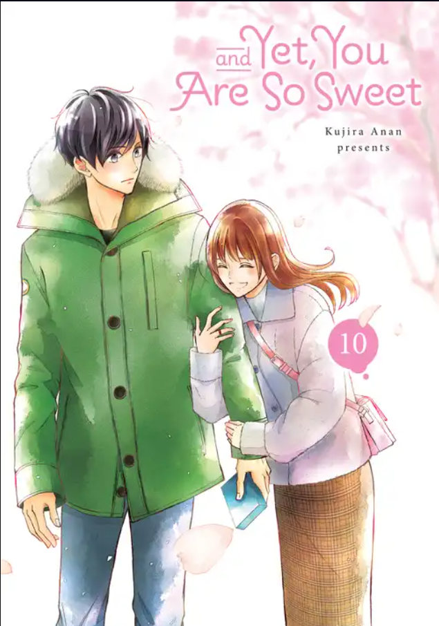

and yet, you are so sweet
And Yet, You Are So Sweet is a romantic comedy about a high school girl who pretends to have a crush on the school's heartthrob after being rejected by her own crush. Maaya Kisaragi is a 16-year-old high schooler who is rejected by her crush and vows to never confess again. However, the popular Chigira-kun overhears her and offers a solution to her heartbreak: she should pretend to have a crush on him. There are two conditions: Maaya can't fall in love with Chigira, and no one can find out about their "relationship".